Toby Fox é um desenvolvedor de jogos indies, ele é mundialmente famoso por ter criado o jogo Undertale, que foi um grande suceeso em seu lançamento.
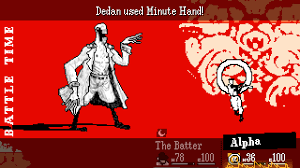
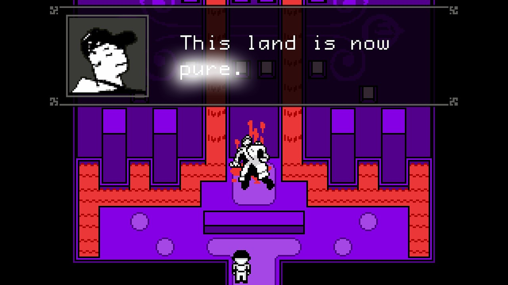
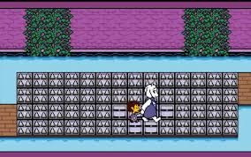
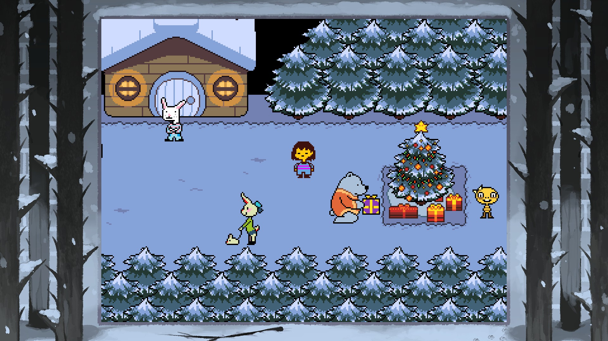
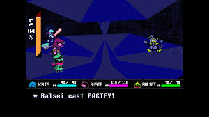
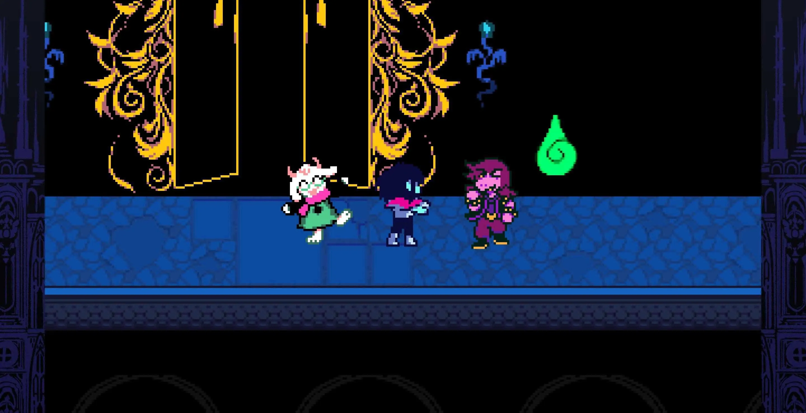
Apesar de ser um desenvolvedor muito famoso, toby fox não chegou a produzir muitos jogos, sendo o famoso Undertale apenas o seu terceiro jogo, isso pode ser observado pelo pessimo codigo de undertale
| Jogos | Copias vendidas |
|---|---|
| Undertale | 3,000,000 |
| Deltarune | 2,700,000 |
| Arn's Winter Quest | Não tem dados |
| OFF | 700,000 |
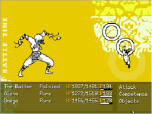
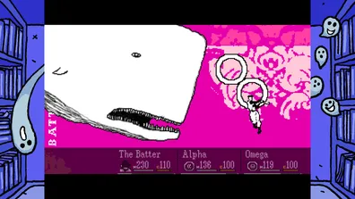
OFF (estilizado em letras maiúsculas ) é um jogo eletrônico de RPG de 2008 desenvolvido e publicado pela equipe belga Unproductive Fun Time, composta por Martin Georis ("Mortis Ghost") e Alias Conrad Coldwood. O jogo gira em torno de uma entidade humanoide enigmática conhecida como Batter, descrita como estando em uma "missão sagrada" para " purificar " o mundo de Off . O Batter viaja por quatro Zonas bizarras no mundo, revelando mais sobre ele à medida que o jogo avança.
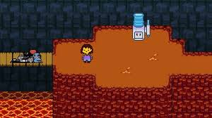
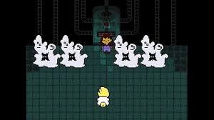
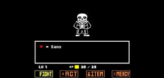
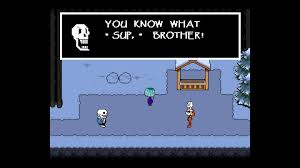
Undertale (estilizado como UNDERTALE) é um RPG eletrônico criado pelo desenvolvedor independente norte-americano
Toby Fox (Robert F. Fox). Nele, o jogador pode controlar uma criança humana que caiu em uma caverna no subsolo de
uma montanha, uma região grande e isolada sob a superfície da Terra, separada por uma barreira mágica.
Vários
monstros podem ser encontrados durante sua missão para retornar à superfície, principalmente através do sistema de
combate; o jogador navega pelos ataques em formato bullet hell do oponente e pode optar por pacificar ou subjugar
os monstros para poupá-los em vez de assassiná-los. Essas escolhas causam mudanças no diálogo, nos personagens e
na história com base nos resultados.
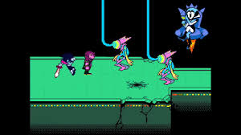
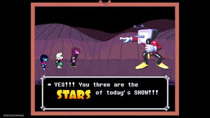
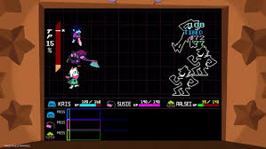
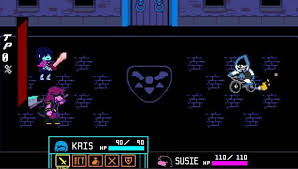
Deltarune é um jogo eletrônico de RPG desenvolvido por Toby Fox, criador de Undertale. O primeiro capítulo foi
lançado gratuitamente em 31 de outubro de 2018 para Microsoft Windows e macOS, com versões posteriores para
Nintendo Switch e PlayStation 4. O segundo capítulo foi lançado em 17 de setembro de 2021. Em 4 de junho de 2025,
os capítulos 3 e 4 foram lançados simultaneamente, marcando a transição do jogo para um título pago, disponível
para PC, macOS, Nintendo Switch, Nintendo Switch 2, PlayStation 4 e PlayStation 5.
O jogo se passa em um universo paralelo do jogo undertale, onde o protagonista Kris, que junto com os colegas
Susie e Ralsei, é transportado para um mundo misterioso conhecido como "Dark World", onde precisam restaurar o
equilíbrio entre luz e escuridão. Apesar de compartilhar elementos visuais, musicais e de jogabilidade com
Undertale, Deltarune se passa em um universo distinto, com novos personagens e enredo. O sistema de combate
combina mecânicas de turnos com esquivas em tempo real, incentivando estratégias pacifistas e não violentas.